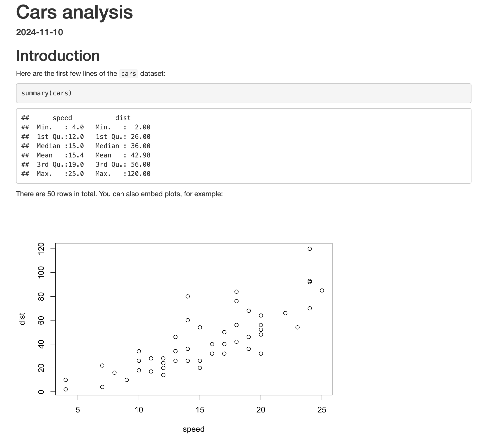
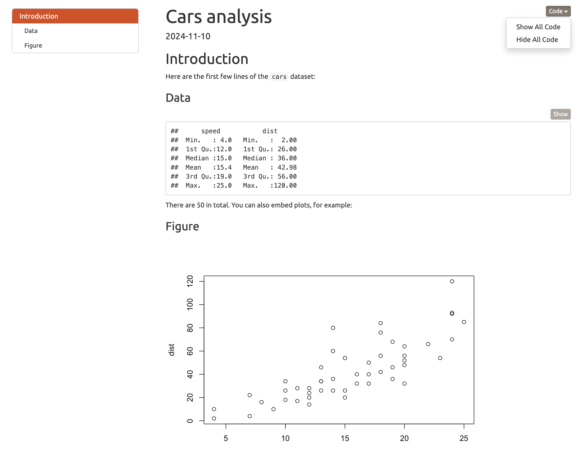

Literate programming with Rmarkdown


Examples
Rmarkdown .Rmd file
Contents
- YAML header
- R code chunks
- Formatted text
Output

Mini-Exercise
3 minutes
Create and run a new Rmarkdown file
In RStudio, open a new file by clicking

Select
 R Markdown…
R Markdown…Enter a Title and Author then click OK
Click
 to knit the file (you will be prompted to save the file—save it in your Exercises folder)
to knit the file (you will be prompted to save the file—save it in your Exercises folder)Examine the rendered output
Under the hood

Output

Output
Text formatting
Rmarkdown syntax
Output
. . .
*italic* or _italic_
italic
. . .
**bold** or __bold__
bold
. . .
superscript^2^
superscript2
. . .
subscript~2~
subscript2
. . .
# Level 1 header
Level 1 header
. . .
## Level 2 header
Level 2 header
. . .
### Level 3 header
Level 3 header
. . .
>Stand out quote
Stand out quote
Lists
Rmarkdown syntax
Output
. . .
* Bullet
* Point
* list
- Bullet
- Point
- list
. . .
1. Numbered
1. List
1. Items
- Numbered
- List
- Items
Links and images
Rmarkdown syntax
Output
. . .
[click here](http://google.com)
. . .

Mini-Exercise
5 minutes
Practice text formatting
Edit the file exercises/5-rmarkdown/poem-exercise.Rmd to generate the output on the right

YAML Header
Yet Another Markdown Language
---
title: "Cars analysis"
output: html_document
date: "2024-11-10"
---Controls whole-document settings
key-value pairs
output: html_documentoutput: word_documentoutput: pdf_document
YAML Nested Keys
output:
html_document:
toc: true
toc_float: true
code_folding: hide
theme: united
Inline R code
- Insert values of R objects inline in text
- Useful for quick calculations
Average speed was `r mean(cars$speed)`mph.Average speed was 15.4mph.
Code chunks
```{r scatterplot, echo=FALSE}
plot(cars)
```- Click
 to add
to add - Starts and ends with triple backticks
``` {r}indicates the language is R{r scatterplot}indicates the chuck name is scatterplot (not essential by useful for readability and troubleshooting)echo=FALSEa chunk option meaning don’t print the code to the output
Chunk options
Option
Meaning
. . .
echo=FALSE
Show code in output document (TRUE/FALSE)
. . .
eval=FALSE
Run code in the chunk (TRUE/FALSE)
. . .
include=FALSE
Include code in the chunk (TRUE/FALSE)
. . .
message=FALSE
Display code messages in document (TRUE/FALSE)
. . .
warning=FALSE
Display code warnings in document (TRUE/FALSE)
. . .
fig.width=7
Figure width in inches
. . .
fig.height=7
Figure height in inches
Global options
Use knitr::opts_chunk$set() to set global options
```{r, setup, include=FALSE}
knitr::opts_chunk$set(
echo = FALSE, fig.width = 5, fig.height = 7
)
```. . .
- Has to go inside an R code chunk
- Individual code chunks can have different settings
Parameters
Parameterised reports allow you to reuse a report template across multiple similar scenarios
Generate reports for a specific time period
Generate the same report for different Local Health Districts
Repeat your whole analysis using a different definition of your exposure variable
Parameters example

. . .
- Note
dataset: !r carsdefines the parameter ‘dataset’ to be an R object, rather than the string “cars”
Workflow and tips
Write in your
.Rmdfile but regularly click knit and preview your fileUse global code chunk options to suppress code and warnings that you don’t want the reader to see (
echo=FALSE,warning=FALSEetc)Separate code to generate figures into separate
.Rfiles then read into.Rmdusingsyntax
Mini-Exercise
15 minutes
Update a parameterised R Markdown Powerpoint slide deck
Open the file
my-presentation.Rmdin the folderExercises/5-rmarkdownEdit the YAML header to generate a powerpoint output instead of HTML (see here for a list of output format names)
Add an additional slide showing the figure on self assessed health
Update the
dateparameter to print the latest set of figures.